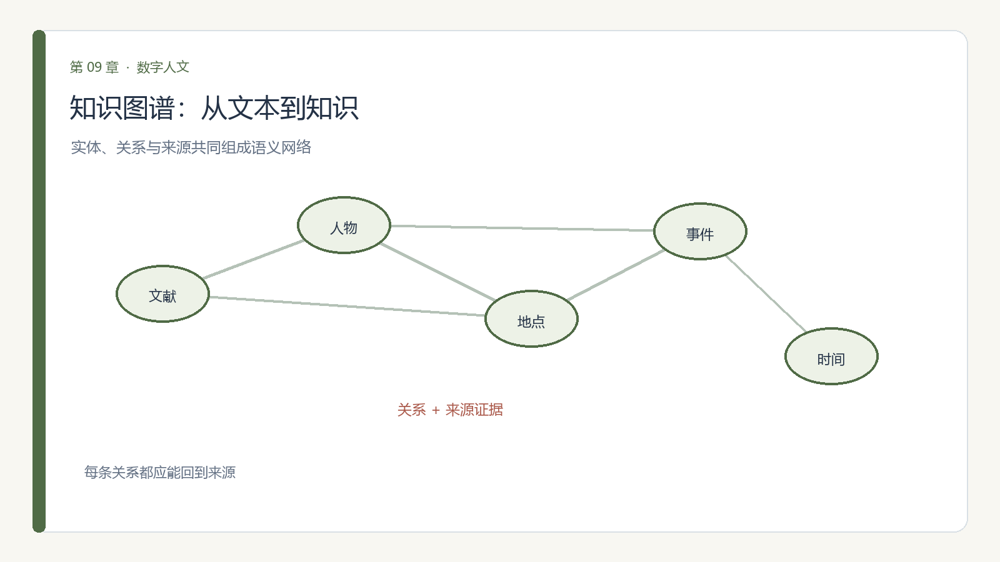

第 9 章 知识图谱与语义技术
学习目标：完成本章后，你应能
（1）说出 RDF、URI、本体各自解决什么问题；
（2）描述从实体抽取到图谱对齐的构建流程；
（3）用 GraphRAG 让问答"有据可依"；
（4）指出本体设计本身可能固化的世界观偏见。
9.0 思政导入
思政融入（课程思政）：构建基于中华典籍、方志、民族文献的知识图谱，是在为中国自主知识体系夯实地基。当我们用自己的材料、自己的分类去组织人类经验，就不再被动沿用他人框架。自主的本体与图谱，是文化主体性的数字表达——把中国人的知识家园掌握在自己手里。
思政案例（课程思政示范案例 / AI 思政课 知识库）：可参照人工智能思政精准教学中“知识图谱”的应用——自主构建领域图谱，正服务于中国自主知识体系建设。

9.1 把零散事实连成网络
第 6 章介绍的关系网主要描述节点之间的连接；知识图谱还要说明每条边的语义，例如"师从""任职于""现藏于"。同一关系可能有时间、来源和不同版本，因此图谱既是数据结构，也是对研究对象的概念化。
真实案例：Sampo 语义门户。 Sampo 系列把博物馆、档案和图书馆分散的文化遗产数据整理成链接数据，再通过不同视角的语义门户提供检索、分析和知识发现。WarSampo、BiographySampo 等门户展示了同一底层图谱可支持不同人文问题；但数据聚合不意味着原始机构的分类差异已经消失。
理论9.2 语义网三件套：URI、RDF 与本体
- URI：给每个实体一个全网唯一ID（如
:苏轼），避免"苏轼/苏东坡"被当成两人； - RDF：用"主—谓—宾"三元组表达事实（苏轼—字号—东坡居士）；
- 本体（ontology）：规定"类"与"关系"的词典（人可以有"师从"关系，地点可以有"位于"关系）；
- 约束与验证：用 SHACL 等形状约束检查必填属性、数据类型和关系范围，发现格式问题，但不能代替历史真实性判断。
例如，可把"苏轼—字号—东坡居士"建为一条断言，并同时保存出处、页码、录入者和适用时间。URI 要有稳定命名空间，避免只在本机成立的临时编号；不同资料中的同名实体也不应仅凭字符串相同就合并。
理论9.3 本体设计：类、属性与关系
设计本体就是明确研究如何划分对象及关系。例如，"人物"与"作品"可有"作者"关系；"诗人"不一定适用于所有时期和语境，"籍贯"也可能按出生地、祖籍、长期居住地等不同口径记录。
本体启动前先写出能力问题：研究者要用它回答什么？给核心类和关系各写定义、反例、来源规则及时间有效范围；保留原始称谓、异名和无法判定的状态，避免把复杂的历史身份硬塞进单一现代分类。对外发布时给出版本号与变更记录。
理论9.4 图谱构建：从抽取到对齐
流程通常是：① 用第 4 章的 NER 产生实体候选；② 抽取关系并回到原文核实；③ 实体对齐——比较姓名、年代、地点和出处后判断是否指向同一对象；④ 补充属性及来源；⑤ 用约束校验结构，再由领域专家抽查。
对齐结果应能表达"确定同一""可能同一""尚未判断"等状态，而不是只留下一个被合并后的节点。把原始名称、引用文本、模型/规则版本和人工修订同时保存，后续研究者才有机会重新检查。2023 年 Sampo 研究总结了文化遗产链接数据和语义门户的协作模式，展示从数据聚合走向人文分析与知识发现的应用路线：Hyvönen, 2023。
理论9.5 GraphRAG：图谱增强问答
GraphRAG 是将实体关系图、社区摘要或图遍历检索与大模型生成结合的一类方法。传统向量 RAG 擅长找与问题相似的片段；图检索可以辅助回答跨文档关系或全语料概览问题。Edge 等（2024）的 GraphRAG 预印本针对大规模文本语料的全局问答，报告其在回答覆盖度和多样性上优于基线 RAG 的实验结果。
这不是"接上图就不会幻觉"的保证：图谱本身会漏实体、错连关系，摘要会丢失细节，检索不到也可能被模型补写。人文使用应同时展示检索到的原文、图谱路径和出处，分别评估检索召回、事实正确性与引用支持度；对单一事实问题，轻量的关键词或向量检索也可能更合适。研究来源：Edge et al., 2024, preprint。
理论9.6 伦理坐标：本体即世界观（本章核心能力）
- 分类的暴力：用今天的类去切历史身份（如强行把古人归入现代学科），会扭曲；
- 被固化：本体一旦写成，就默认"世界就该这么分"，边缘类别被排除；
- 来源偏见：图谱只含被数字化的实体，沉默者再次缺席；
- 错误合并：把同名异人合并会制造虚假的师承或关系，传播到下游问答和统计；
- 解释责任：推理得到的新事实须与原始断言区分，并指出所依赖的规则。
所有事实都应尽可能保留来源、时间和版本；对争议说法记录不同来源的断言，而非强行选一条作为唯一真值。近期语义门户研究（Hyvönen, 2023）强调跨机构数据协作与分析，GraphRAG（Edge et al., 2024，预印本）则展示了图结构支持全局问答的潜力。二者也提示治理重点：数据可以互联，但出处、许可、分类差异和不确定性不能被互联过程抹去。
一条红线：不把本体当成"客观真理"，而是标明"这是本研究采用的分类视角"；对历史身份保持谦卑。
9.7 综合实践：构建图谱并核查问答证据
任务一：建一个小领域知识图谱
小练习 9.1（知识图谱）：取一个你熟悉的小领域（如某学派师承、某类器物出土地），手工或借助 NER 抽出 10–20 个实体与关系，写成三元组，用 rdflib 建图并回答一个问题（如"苏轼的师承链是谁"）。本章 V2.2 的《文化基因视域下诗词资源多维知识重组与可视化研究》《吐蕃藏文金石铭刻知识图谱构建研究》《基于知识图谱的井冈山革命文化资源数字叙事模型的构建与实现》分别是诗词、民族文献、红色资源的图谱范例，可对照你图谱的"叙事"设计。
任务二：使用 GraphRAG 并核查回答证据
- 目标：在 9.7 小图谱基础上，接 GraphRAG，验证“答案能否回溯到原文”。
- 步骤：
- 准备一份小语料（如某位学者的论文集）；
- 构建图谱 + 向量索引；
- 提 5 个问题；
- 对每答标注“证据句”；
- 统计可回溯比例，写反思。
- 工具：GraphRAG 或轻量 LangGraph 方案。
- 产出：问答记录 + 证据回溯表 + 反思。
- 评价量规：流程可跑（30%）、证据标注（30%）、回溯分析（40%）。
9.8 本章小结与思考
带走三件事：语义网三件套（URI/RDF/本体）、构建四步（抽取→连边→对齐→补属性）、GraphRAG 降幻觉 + 本体偏见自觉。图谱让人文事实"可推理"，但分类视角要坦白。
思考题
- 给你的小领域设计本体时，哪一类事实最难归类？这反映了什么分类难题？
- 知识图谱"对齐"把不同来源的同一实体合并，会不会因此丢失差异（如不同文献对同人的不同记载）？
- 用现代学科框架给古人分类，可能怎样扭曲历史？如何在本体里留"弹性"？
9.9 学术前沿与延伸阅读
下表为通过 OpenAlex（开放学术图谱，聚合期刊/会议/预印本）、DBLP（CS 会议期刊，含 SIGIR/UIST/DH/IJDAR/EPIA）、arXiv（预印本）、CrossRef（期刊 DOI 元数据）、CORE（开放获取库）检索到的真实文献，按来源/被引排序，供延伸阅读与实验报告引用。
课堂复现（检索即方法）：下列代码直接调用 OpenAlex 免费 API 复现本章文献检索（无需密钥）。
import urllib.request, urllib.parse, json
q = 'data science digital humanities'
url = 'https://api.openalex.org/works?search=' + urllib.parse.quote(q) + '&per_page=10&sort=cited_by_count:desc'
oa = json.loads(urllib.request.urlopen(url, timeout=30).read())
for w in oa['results']:
print(w['publication_year'], w['title'], '->', (w.get('primary_location') or {}).get('source', {}).get('display_name'))误用警示：① arXiv 预印本未经同行评审，引用须标 preprint 并追正式版；② 被引数代表影响力非结论正确；③ 商业库（WoS/Scopus/Elsevier/JSTOR/CNKI）本环境无订阅，需机构账号获取后再并入。
与实验衔接：将任一方法对照本章实验改写数据集或提示词，即可形成有学术依据的结题报告。
第9章·中文核心期刊文献实证（V2.2·19 种图情档核心期刊）
下表论文来自 19 种中文图情档核心期刊（中国图书馆学报、情报学报、情报资料工作、档案学通讯、大学图书馆学报、图书情报工作、数据分析与知识发现、情报杂志、情报理论与实践、图书与情报、档案学研究、图书馆杂志、图书情报知识、图书馆论坛、图书馆学研究、图书馆建设、情报科学、现代情报、信息资源管理学报），经 Web 检索（期刊官网 / CNKI 索引 / DOI 溯源）按主题核实得到真实文献（含 DOI/链接）。
| 来源期刊 | 年份 | 标题（链接） | 作者 |
|---|---|---|---|
| 图书情报工作 | 2023 | 文化基因视域下诗词资源多维知识重组与可视化研究 | 周树斌, 高劲松, 张强 等 |
| 图书情报工作 | 2024 | 基于知识图谱的井冈山革命文化资源数字叙事模型的构建与实现 | 张云中, 汪诗雨 |
| 图书情报工作 | 2023 | 吐蕃藏文金石铭刻知识图谱构建研究 | 龙从军, 安波, 张圣彦 |
| 图书情报工作 | 2024 | 面向探索式搜索的领域知识图谱构建及实验探索 | 王娟, 曹树金, 王志红, 彭碧涛 |
| 图书情报工作 | 2023 | 基于协作智能的数字人文领域知识图谱构建 | 任明, 贾君枝 |
| 图书情报工作 | 2024 | 智慧图书馆建设过程中技术元素分析及知识图谱构建研究 | 程秀峰, 曹琪, 蒋开宸, 周梦蝶 |
| 图书情报工作 | 2024 | 面向中文电子病历的多模态知识图谱构建方法研究 | 韩普, 陈文祺, 叶东宇 |
| 数据分析与知识发现 | 2024 | 基于开源情报的军事知识图谱问答智能服务研究 | 范俊杰, 马海群, 刘兴丽 |
课堂复现（中文文献检索）：这些期刊正式全文多见于 CNKI/万方/维普（本环境无订阅）。可在机构网络以「期刊名 + 主题词」检索，导出 BibTeX/RIS 后交我并入；DOI 可在 https://doi.org/<DOI> 溯源摘要。
误用警示：① 引用以期刊正式版本为准（年/卷/期/页）；② 回到原文核对方法与数据；③ 与本节实验的映射是"启发"而非"背书"。
与实验衔接：将上表任一中文方法（如中文知识图谱、机器学习人文应用）对照本章实验改写，即可形成有本土学术依据的结题报告。
本章配套游戏：本体拼装